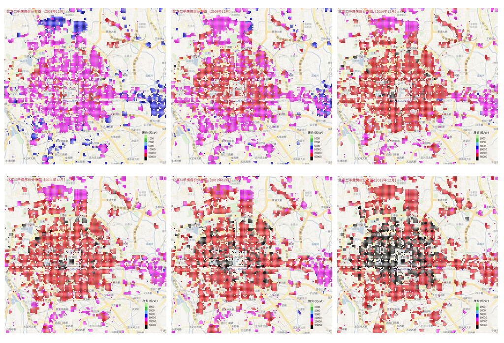

这次与秦老师的讨论集中在研究的困难上，以问答形式呈现，兼补充一些思考。
文献之难
问：这一两个月看了些书和论文，发现有如下几个问题：1）文献很散，只见树叶，没有摸到主干和根；2）文献的连贯性，有的知道的主干，也叶子，但中间的枝杈很少；3）想研究的问题涉及学科很多，但在各自学科领域都不特别“主流”。譬如，城市经济、空间经济问题在经济学领域算不上核心问题，经济学致力于研究更“普遍”的问题。
答：有时候相关研究少有两种可能，一是这个问题不重要，没有那么多人想研究；二是这个问题不容易研究，科研做为一门职业的话，如果是要研究的问题特别难、不容易有结果，很多科研工作者不会选择去研究。但你是一个学生，可以没有这么大的包袱和压力。在各自学科领域不“主流”不代表问题不重要，恰恰是一些交叉领域的研究在各领域看来不“主流”，但更能接近问题的本质，因为问题是没有严格的专业划分的，不能简单说这个问题属于经济学问题，那个问题属于社会学问题。
研究的尺度
问：像一直讨论的人均财富在土地分布的问题，按居住、生产和消费等不同指标来衡量会有非常不同的结果。比如（这个例子并不恰当，但能表达我想说的意思），一个村子，如果用地分布如下图所示。那么如果按生产来看，财富集中在农田的中心点；如果按居住来算，财富集中在居住区；如果按消费来看，财富集中在商业区。城市的土地使用更加复杂，如何研究？

答：尺度的范围确实是这个研究的难点，但也是需要解决的点。简单说我们把尺度分为宏观和微观，宏观上最大就是全球，我们也看到了由照明地图显示的区域的经济分布不均衡。（朝鲜和韩国的例子，及YALE一位教授做的相关研究）这个研究在整个中国这个宏观范围内也相对容易做，因为城市很容易被抽象成一个点。但微观到什么程度呢？像很多城市的厂区，在一定尺度上可以定义工业用地，但再细一点会发现，大厂区里面有自己的住宅区、商业区、学校、医院等一系列其它属性的用地，如何计算？还有就是为于人的流动性，白天上班，晚上回家，这个可能也是财富分布需要考虑的一个点，算土地还是算人，怎么算？都需要去读点想关资料，看看不同领域怎么看这个问题。
比如富士康在河南郑州某乡镇建了一个工场，产值很高，你在统计不同尺度的GDP时会发现很有意思的问题。统计河南的时候算入GDP没什么问题，算到郑州甚至也没什么问题，但算到这个乡镇的话可能问题就来了，算下来这个乡镇人均GDP可能数百万。关于尺度规律的探讨将是这个研究很重要的关注点，你可以先做一些东西，我们再来讨论。
（补充：城市作为复杂系统，在不同尺度有着不同的表现。通过对人口密度的统计特征、空间自相关性和空间格局的多尺度分析，证明城市形态和人口密度具有强烈的尺度依赖性，即存在显著的尺度效应(杜国明，张树文，张有全，2007)。但也有学者表示，在不同的尺度下，人口变量有相似的属性（West等）。）
研究的延展性
问：感觉每一步都充满了问题与挑战，再加上数据获取的不易，对研究能做出什么没太大把握。
答：有时候并不一定能完全解决你发现的问题，提出这个问题，并做些解决上的尝试本身也是件很有意义与价值的事情。如果能做，我们可以走到哪一步，如果不能，我们也可以朝同一个问题的另一个方面努努力。
打分体系的问题
问：有时候我们会用问卷或打分体系来评判某个体系，但我发现这有点问题。因为真正重要的项可能被忽视，拿考试举个例子，孔子写了（或说口述）了《论语》，这个知识对语文很重要，但你不会去考这个，因为大家都知道，真正好的考试题是答案满足正态分布的那一类，以体现区分度。量化评价体系会不会有这个问题？
答：很可能会有。除此外还有两个重点和难点，一是指标之间的相关性，如果满足A的基本都满足B，那这两个指标有一个就意义不大（A、B指标正相关）。二是指标找出来了，不同指标权重如何给？特别困难。给你举个例子，当年做绿色建筑评价标准，大家都觉得“XX”指标对于绿色建筑评价很重要（我记不清具体哪一条了），但发现所有项目基本都满足，算不算入这个指标？算入相当于大家都白得这个分，不算又感觉指标不完善。所以当时评价标准采用了一个“合格制”，几个大项，你都得60分之上就算合格了。（具体细节记录不是很准确）
定性与定量之辩
这部分是自己从打分体系引发的一些思考。定性与定量对于问题研究而言都非常重要，根据某种特征和规则社会现象进行分类、定义要研究的问题往往是定性的，这也是定量研究的前提。比如研究“城市”和“收入”问题，对“城市”和“收入”这两个变量的定义和测量指标先得有学术共识，这些共识一般是定性的。
另外需要提醒自己的是由于中国与国外发展时期的不同，定量方法在中国有局限性。随社会的变化，一些对社会解释的“变量”也必然在变化。我们普遍承认量变引起质变，但这个临界点在哪里？何时、何地、何种情况会发生？相对来说西方社会制度、社会结构长期较稳定，社会发展以量变为主。但中国的问题不尽如此，存在质变的条件下，定量研究是有局限性的。

北京2008-2012年住宅地理位置与价格分布图 （资料来源：http://www.cityre.cn/lab.html）